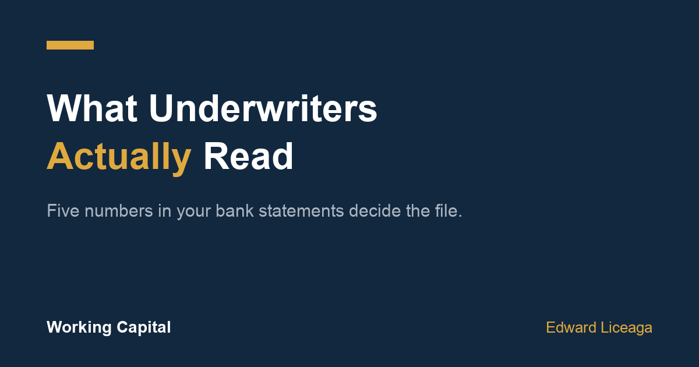

What Do Underwriters Look For in Bank Statements: Five Numbers That Decide You
Your credit score is not the application. Your last three months of deposits are.

Most owners walk into a funding conversation braced for a credit pull. Then they find out the decision was mostly made by a PDF they already had sitting in online banking.
What do underwriters look for in bank statements? Five things, in roughly this order. None of them is your FICO score. If you know what the five are, you can read your own file before anyone else does, and you can fix the ones that are fixable in about 90 days.
I work a funding desk at Creative Capital Solutions. This is the same walkthrough I give on the phone, written down.
1. Deposit consistency
Not total revenue. Consistency.
An underwriter counts your deposits per month and looks at whether the monthly totals hold their shape across three months. A business depositing $40,000, $42,000, and $38,000 reads as a business. A business depositing $95,000, $6,000, and $31,000 reads as a question, even though the three month total is higher.
Number of deposits matters too. Fifteen to twenty deposits a month says daily customers and daily receipts. Two deposits a month says you are collecting on invoices, which is fine, but it changes what a remittance schedule can safely look like.
If your revenue really is lumpy because of how your industry bills, that is not automatically a problem. Consistency year over year counts as consistency. What hurts is lumpy with no pattern.
2. Average daily balance
This is the single most predictive number in the file.
Average daily balance is what your account actually holds on a typical day, not what passes through it. Two businesses can both run $50,000 a month in deposits while one carries a $9,000 average daily balance and the other carries $700. The first has cushion. The second is running the account to zero every cycle and has nothing absorbing a bad week.
Underwriters use this to size an offer and to set payment frequency. A thin average daily balance does not always mean a decline. It usually means a smaller amount and a shorter term, because that is what the account can carry without breaking.
Practical version: if you sweep cash to a savings account or a second operating account the moment it lands, the statement you submit is understating you. Submit the statements that show the balance, or submit both.
3. Negative days and NSF activity
Days ending below zero. Returned items. Overdraft fees.
One or two negative days in 90 is noise. Six or more, especially clustered near the end of each month, tells an underwriter the account cannot absorb its existing obligations. NSF items are worse than an overdraft, because a returned payment means somebody already tried to collect and could not.
This is the number that most often turns a strong looking file into a small offer or a no. It is also the most fixable one on this list, which is why it is worth watching before you need capital rather than during.
4. Existing positions
Underwriters read the debit side of the statement as carefully as the credit side.
Regular fixed debits, daily or weekly, at amounts that do not look like utilities or payroll, read as an existing advance or loan. Two of those patterns running at once is called stacking, and it changes the math on everything. Your receivables are already spoken for, so a new position is competing with obligations that get paid first.
Nobody expects a clean sheet. Existing positions are common and disclosed positions are normal. What damages a file is a position the statements show and the application does not. That reads as something being hidden, and it costs you credibility on every other line.
5. Deposit concentration
Where the deposits come from, not just how much.
If 80% of your monthly volume arrives from one customer, your business carries that customer's risk. Losing them is not a slow decline, it is a cliff. Many small deposits from many payers is structurally safer than the same dollar amount from two payers, and files get read that way.
This is the one most owners have never heard. It is also why a restaurant with $35,000 a month across 900 card transactions can read better than a subcontractor with $55,000 a month across three checks.
What matters less than you think
Credit score matters, but it is a tiebreaker, not the gate. A 580 with clean, steady deposits is a fundable file. A 750 with three overdrafts a month may not be. I wrote about why that inversion exists in [When the Bank Says No](https://milliondollarmanteddibiase.substack.com/p/when-the-bank-says-no-a-field-guide), which covers what alternative funding is and what it costs.
Time in business matters at the edges. Under six months is hard almost everywhere. Past about two years, additional time stops moving the number much.
Your industry matters mostly for how the term is structured, not whether you are approved. Seasonal businesses get shorter terms. Businesses with daily receipts get daily remittance. That is structure, not judgment.
The 90 day version of fixing this
Three months of statements is the standard file, which means the account you run over the next 90 days is the account that gets read. Three things move the needle:
Stop the negative days. Keep a floor in the operating account and move the two or three recurring debits that keep clipping it. This is the highest return change available and it costs nothing but attention.
Stop sweeping to zero. If you move cash out the day it lands, your average daily balance reads far thinner than your business actually is. Leave a working floor in place.
Deposit everything through the business account. Cash sales that never touch the account are revenue that does not exist in underwriting. Running receipts through the account makes them count.
None of this is a trick and none of it changes what your business earns. It changes what your statements say about what your business earns, which is what actually gets read.
The last thing
Knowing what underwriters look for in bank statements is useful before you need money, not during. The owners who get the best outcomes are the ones who looked at their own three months in a quiet week, saw the two problems, and fixed them ahead of the call.
If you want to see what your deposits may support, the application is one page and three months of statements: ccapsolution.com/apply. Subject to approval; terms vary by file.
May qualify, subject to approval. Amounts, terms, and timelines vary by file. A merchant cash advance is the purchase of future receivables, not a loan. I am an independent funding partner and earn on funded referrals.